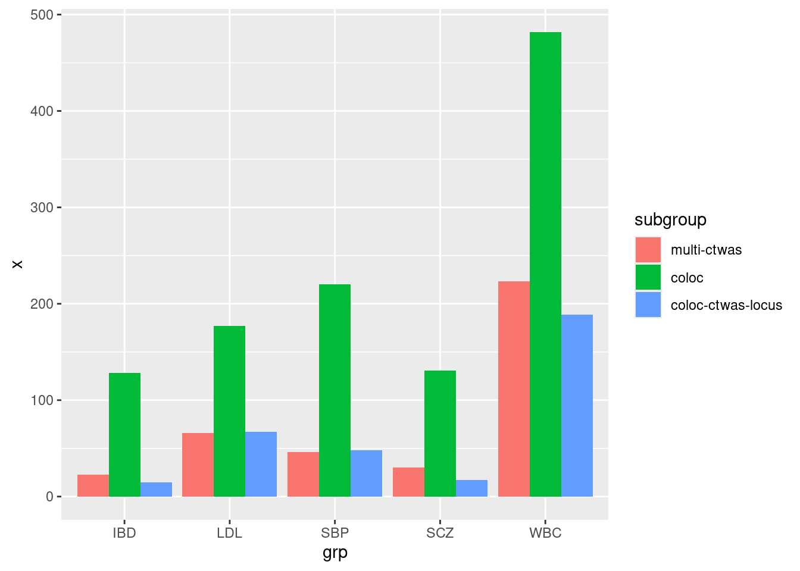
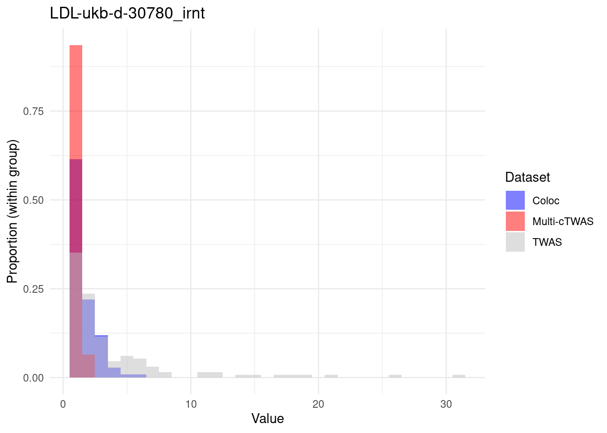
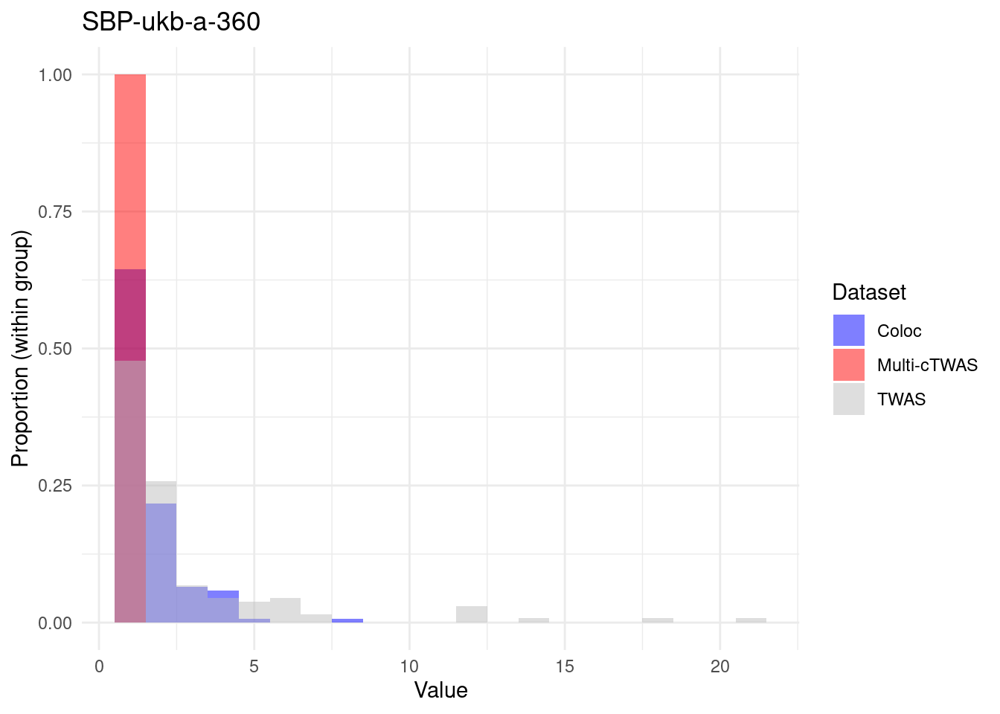
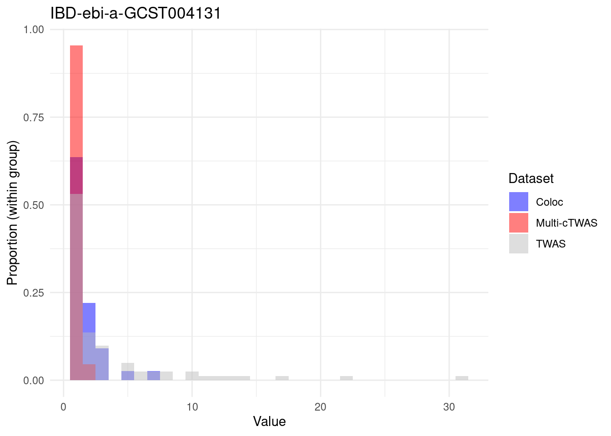
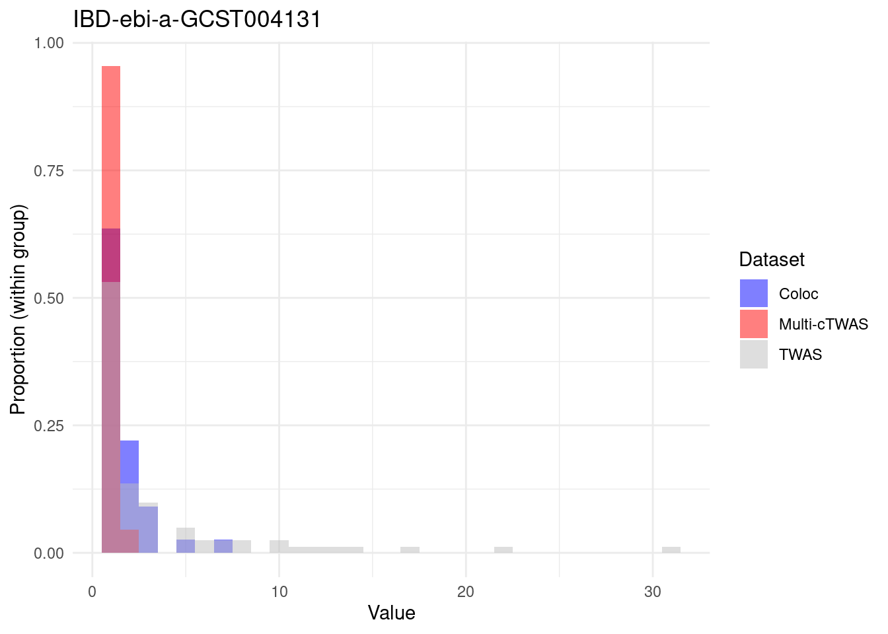
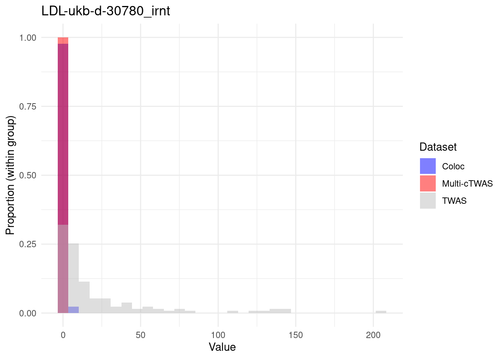
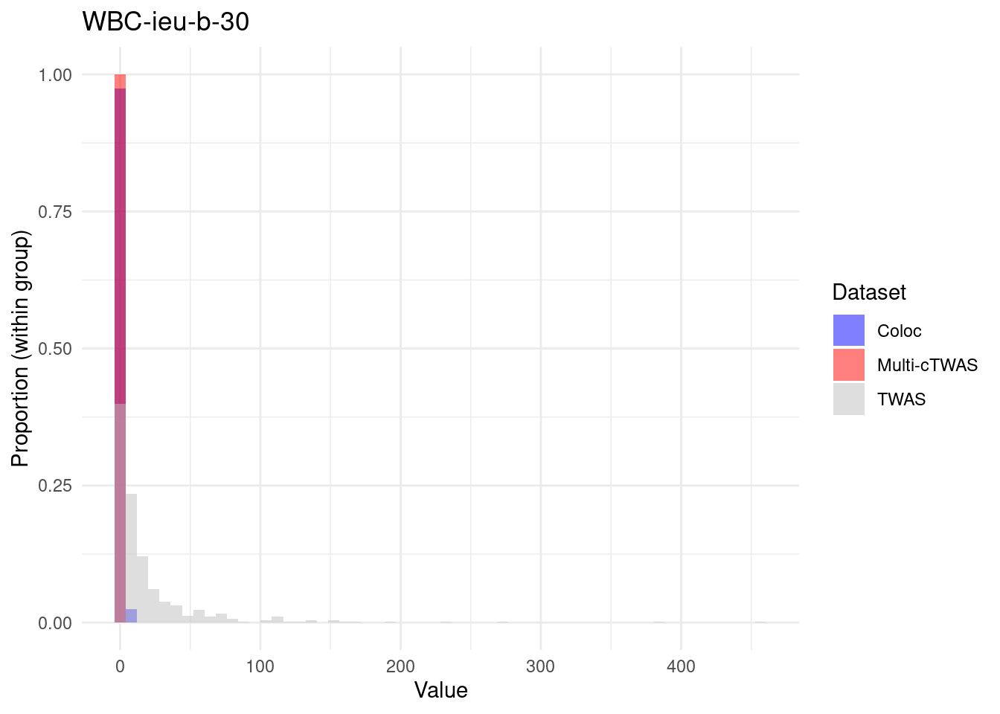
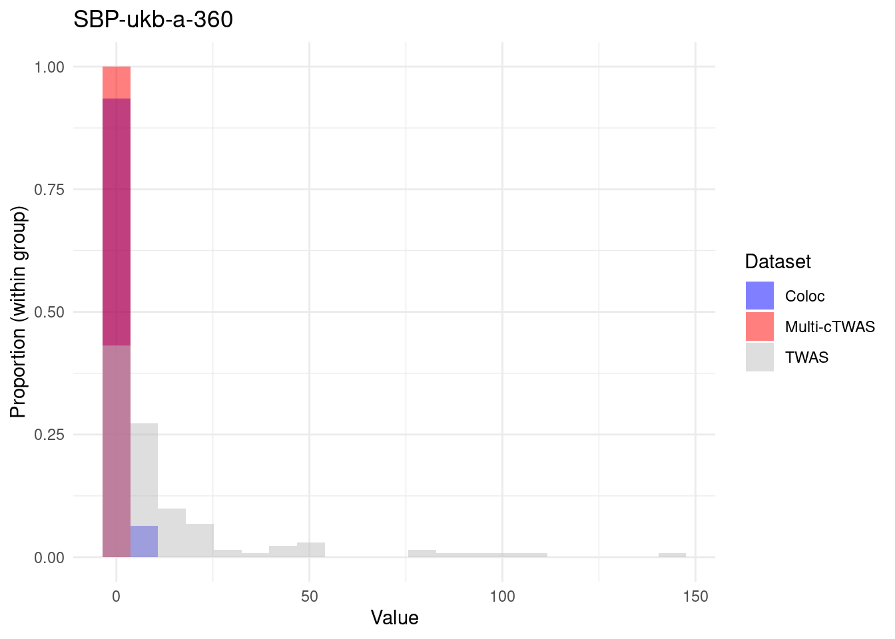
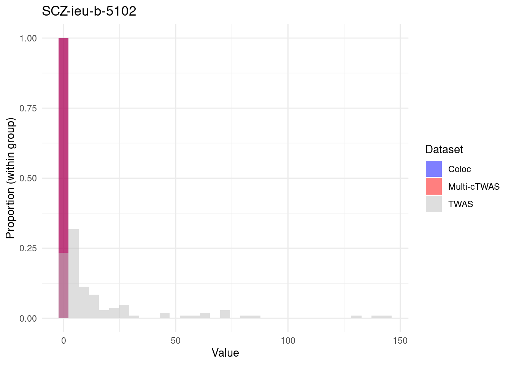

real data coloc analysis
2024-10-22
Last updated: 2025-01-23
Checks: 6 1
Knit directory: multigroup_ctwas_analysis/
This reproducible R Markdown analysis was created with workflowr (version 1.7.0). The Checks tab describes the reproducibility checks that were applied when the results were created. The Past versions tab lists the development history.
The R Markdown file has unstaged changes. To know which version of the R Markdown file created these results, you’ll want to first commit it to the Git repo. If you’re still working on the analysis, you can ignore this warning. When you’re finished, you can run wflow_publish to commit the R Markdown file and build the HTML.
Great job! The global environment was empty. Objects defined in the global environment can affect the analysis in your R Markdown file in unknown ways. For reproduciblity it’s best to always run the code in an empty environment.
The command set.seed(20231112) was run prior to running the code in the R Markdown file. Setting a seed ensures that any results that rely on randomness, e.g. subsampling or permutations, are reproducible.
Great job! Recording the operating system, R version, and package versions is critical for reproducibility.
Nice! There were no cached chunks for this analysis, so you can be confident that you successfully produced the results during this run.
Great job! Using relative paths to the files within your workflowr project makes it easier to run your code on other machines.
Great! You are using Git for version control. Tracking code development and connecting the code version to the results is critical for reproducibility.
The results in this page were generated with repository version 46a4b27. See the Past versions tab to see a history of the changes made to the R Markdown and HTML files.
Note that you need to be careful to ensure that all relevant files for the analysis have been committed to Git prior to generating the results (you can use wflow_publish or wflow_git_commit). workflowr only checks the R Markdown file, but you know if there are other scripts or data files that it depends on. Below is the status of the Git repository when the results were generated:
Unstaged changes:
Modified: analysis/real_data_coloc.Rmd
Note that any generated files, e.g. HTML, png, CSS, etc., are not included in this status report because it is ok for generated content to have uncommitted changes.
These are the previous versions of the repository in which changes were made to the R Markdown (analysis/real_data_coloc.Rmd) and HTML (docs/real_data_coloc.html) files. If you’ve configured a remote Git repository (see ?wflow_git_remote), click on the hyperlinks in the table below to view the files as they were in that past version.
| File | Version | Author | Date | Message |
|---|---|---|---|---|
| Rmd | 2318b43 | sq-96 | 2025-01-14 | update |
| html | 2318b43 | sq-96 | 2025-01-14 | update |
| Rmd | 54b3183 | sq-96 | 2025-01-14 | update |
| html | 54b3183 | sq-96 | 2025-01-14 | update |
| Rmd | 7ef4220 | sq-96 | 2025-01-10 | update |
| html | 7ef4220 | sq-96 | 2025-01-10 | update |
| Rmd | 3920429 | sq-96 | 2025-01-10 | update |
| html | 3920429 | sq-96 | 2025-01-10 | update |
| Rmd | 896f38f | sq-96 | 2025-01-10 | update |
| html | 896f38f | sq-96 | 2025-01-10 | update |
| Rmd | 4731bfe | sq-96 | 2024-12-02 | update |
| html | 4731bfe | sq-96 | 2024-12-02 | update |
| Rmd | 3eb93f4 | sq-96 | 2024-12-02 | update |
| html | 3eb93f4 | sq-96 | 2024-12-02 | update |
| Rmd | b12b348 | sq-96 | 2024-12-02 | update |
| html | b12b348 | sq-96 | 2024-12-02 | update |
Method
- For each trait, select regions with at lease one high PIP expression/splicing trait (PIP>0.8)
- based on multi-cTWAS results with three molecular traits (eQTL,sQTL,stQTL) from five tissues.
- Run coloc with eQTL and sQTL full summary statistics from five tissues
- no stQTL full summary statistics
- Comparing the number of expression and splicing molecular traits identified by coloc (PP4>0.8), single-cTWAS (PIP>0.8) and multi-cTWAS (PIP>0.8)
- don’t include stability traits identified by multi-cTWAS
Loading required package: ensembldbLoading required package: BiocGenerics
Attaching package: 'BiocGenerics'The following objects are masked from 'package:lubridate':
intersect, setdiff, unionThe following objects are masked from 'package:dplyr':
combine, intersect, setdiff, unionThe following object is masked from 'package:gridExtra':
combineThe following objects are masked from 'package:stats':
IQR, mad, sd, var, xtabsThe following objects are masked from 'package:base':
anyDuplicated, aperm, append, as.data.frame, basename, cbind,
colnames, dirname, do.call, duplicated, eval, evalq, Filter, Find,
get, grep, grepl, intersect, is.unsorted, lapply, Map, mapply,
match, mget, order, paste, pmax, pmax.int, pmin, pmin.int,
Position, rank, rbind, Reduce, rownames, sapply, setdiff, sort,
table, tapply, union, unique, unsplit, which.max, which.minLoading required package: GenomicRangesLoading required package: stats4Loading required package: S4Vectors
Attaching package: 'S4Vectors'The following objects are masked from 'package:lubridate':
second, second<-The following objects are masked from 'package:dplyr':
first, renameThe following object is masked from 'package:tidyr':
expandThe following objects are masked from 'package:data.table':
first, secondThe following objects are masked from 'package:base':
expand.grid, I, unnameLoading required package: IRanges
Attaching package: 'IRanges'The following object is masked from 'package:lubridate':
%within%The following objects are masked from 'package:dplyr':
collapse, desc, sliceThe following object is masked from 'package:purrr':
reduceThe following object is masked from 'package:data.table':
shiftLoading required package: GenomeInfoDb
Attaching package: 'GenomicRanges'The following object is masked from 'package:magrittr':
subtractLoading required package: GenomicFeaturesLoading required package: AnnotationDbiLoading required package: BiobaseWelcome to Bioconductor
Vignettes contain introductory material; view with
'browseVignettes()'. To cite Bioconductor, see
'citation("Biobase")', and for packages 'citation("pkgname")'.
Attaching package: 'AnnotationDbi'The following object is masked from 'package:dplyr':
selectLoading required package: AnnotationFilter
Attaching package: 'AnnotationFilter'The following object is masked from 'package:magrittr':
not
Attaching package: 'ensembldb'The following object is masked from 'package:dplyr':
filterThe following object is masked from 'package:stats':
filter2025-01-23 20:36:36 INFO::Annotating susie alpha result ...
2025-01-23 20:36:36 INFO::Map molecular traits to genes
2025-01-23 20:36:39 INFO::Split PIPs for molecular traits mapped to multiple genes2025-01-23 20:37:07 INFO::Annotating susie alpha result ...
2025-01-23 20:37:08 INFO::Map molecular traits to genes
2025-01-23 20:37:09 INFO::Split PIPs for molecular traits mapped to multiple genes2025-01-23 20:37:37 INFO::Annotating susie alpha result ...
2025-01-23 20:37:37 INFO::Map molecular traits to genes
2025-01-23 20:37:41 INFO::Split PIPs for molecular traits mapped to multiple genes2025-01-23 20:37:56 INFO::Annotating susie alpha result ...
2025-01-23 20:37:56 INFO::Map molecular traits to genes
2025-01-23 20:37:57 INFO::Split PIPs for molecular traits mapped to multiple genes2025-01-23 20:38:10 INFO::Annotating susie alpha result ...
2025-01-23 20:38:10 INFO::Map molecular traits to genes
2025-01-23 20:38:12 INFO::Split PIPs for molecular traits mapped to multiple genesnumber of genes identified by each method

compare number of genes per locus

 

compare number of genes per locus (locus with multi-ctwas signals)


sessionInfo()R version 4.2.0 (2022-04-22)
Platform: x86_64-pc-linux-gnu (64-bit)
Running under: CentOS Linux 7 (Core)
Matrix products: default
BLAS/LAPACK: /software/openblas-0.3.13-el7-x86_64/lib/libopenblas_haswellp-r0.3.13.so
locale:
[1] LC_CTYPE=en_US.UTF-8 LC_NUMERIC=C
[3] LC_TIME=en_US.UTF-8 LC_COLLATE=en_US.UTF-8
[5] LC_MONETARY=en_US.UTF-8 LC_MESSAGES=en_US.UTF-8
[7] LC_PAPER=en_US.UTF-8 LC_NAME=C
[9] LC_ADDRESS=C LC_TELEPHONE=C
[11] LC_MEASUREMENT=en_US.UTF-8 LC_IDENTIFICATION=C
attached base packages:
[1] stats4 stats graphics grDevices utils datasets methods
[8] base
other attached packages:
[1] EnsDb.Hsapiens.v86_2.99.0 ensembldb_2.22.0
[3] AnnotationFilter_1.22.0 GenomicFeatures_1.50.4
[5] AnnotationDbi_1.60.2 Biobase_2.58.0
[7] GenomicRanges_1.50.2 GenomeInfoDb_1.34.9
[9] IRanges_2.32.0 S4Vectors_0.36.2
[11] BiocGenerics_0.44.0 pheatmap_1.0.12
[13] magrittr_2.0.3 RSQLite_2.3.7
[15] lubridate_1.9.3 forcats_1.0.0
[17] stringr_1.5.1 dplyr_1.1.4
[19] purrr_1.0.2 readr_2.1.5
[21] tidyr_1.3.1 tibble_3.2.1
[23] tidyverse_2.0.0 ctwas_0.4.15
[25] data.table_1.16.0 gridExtra_2.3
[27] ggVennDiagram_1.5.2 ggplot2_3.5.1
[29] workflowr_1.7.0
loaded via a namespace (and not attached):
[1] colorspace_2.1-1 rjson_0.2.23
[3] rprojroot_2.0.3 XVector_0.38.0
[5] locuszoomr_0.3.5 fs_1.6.4
[7] rstudioapi_0.14 farver_2.1.2
[9] ggrepel_0.9.6 bit64_4.5.2
[11] fansi_1.0.6 xml2_1.3.3
[13] logging_0.10-108 codetools_0.2-18
[15] cachem_1.1.0 knitr_1.48
[17] jsonlite_1.8.9 Rsamtools_2.14.0
[19] dbplyr_2.5.0 png_0.1-7
[21] compiler_4.2.0 httr_1.4.7
[23] Matrix_1.5-3 fastmap_1.2.0
[25] lazyeval_0.2.2 cli_3.6.3
[27] later_1.3.2 htmltools_0.5.8.1
[29] prettyunits_1.2.0 tools_4.2.0
[31] gtable_0.3.5 glue_1.7.0
[33] GenomeInfoDbData_1.2.9 rappdirs_0.3.3
[35] Rcpp_1.0.13 jquerylib_0.1.4
[37] vctrs_0.6.5 Biostrings_2.66.0
[39] rtracklayer_1.58.0 xfun_0.47
[41] ps_1.7.1 timechange_0.3.0
[43] irlba_2.3.5.1 lifecycle_1.0.4
[45] restfulr_0.0.15 XML_3.99-0.14
[47] getPass_0.2-2 zlibbioc_1.44.0
[49] zoo_1.8-12 scales_1.3.0
[51] gggrid_0.2-0 hms_1.1.3
[53] promises_1.3.0 MatrixGenerics_1.10.0
[55] ProtGenerics_1.30.0 parallel_4.2.0
[57] SummarizedExperiment_1.28.0 RColorBrewer_1.1-3
[59] LDlinkR_1.4.0 yaml_2.3.10
[61] curl_5.2.3 memoise_2.0.1
[63] sass_0.4.9 biomaRt_2.54.1
[65] stringi_1.8.4 highr_0.11
[67] BiocIO_1.8.0 filelock_1.0.3
[69] BiocParallel_1.32.6 rlang_1.1.4
[71] pkgconfig_2.0.3 matrixStats_1.4.1
[73] bitops_1.0-8 evaluate_1.0.0
[75] lattice_0.20-45 labeling_0.4.3
[77] GenomicAlignments_1.34.1 htmlwidgets_1.6.4
[79] cowplot_1.1.3 bit_4.5.0
[81] processx_3.7.0 tidyselect_1.2.1
[83] R6_2.5.1 generics_0.1.3
[85] DelayedArray_0.24.0 DBI_1.2.3
[87] pgenlibr_0.3.7 pillar_1.9.0
[89] whisker_0.4 withr_3.0.1
[91] mixsqp_0.3-54 KEGGREST_1.38.0
[93] RCurl_1.98-1.16 crayon_1.5.3
[95] utf8_1.2.4 BiocFileCache_2.6.1
[97] plotly_4.10.4 tzdb_0.4.0
[99] rmarkdown_2.28 progress_1.2.3
[101] grid_4.2.0 blob_1.2.4
[103] callr_3.7.2 git2r_0.30.1
[105] digest_0.6.37 httpuv_1.6.5
[107] munsell_0.5.1 viridisLite_0.4.2
[109] bslib_0.8.0